This manual describes every function of the app, in the order you use them: why it exists, how to use it, how it works, with examples. The coloured boxes are landmarks: Why How Example Careful.
Contents
The Roadbook Generator turns a GPX track (or a route drawn on the map) into a rally-raid roadbook: a list of three-box notes (distance, tulip, instructions), like an FIM / FIA roadbook. It produces:
an OpenRally GPX for the Roadbook Reader (the reader on tablet or phone), with notes, waypoints, zones and rules;
a PDF / printout in paper format (5 notes per A4 page);
a project (.json) to resume your work later.
| Word | Meaning |
|---|---|
| Track | The route: a GPS line following paths. It is the raw material. |
| Note | One line of the roadbook: a place on the route where something must be said to the rider (junction, danger, landmark…). Three boxes. |
| Tulip | The small drawing of the junction (2nd box): where you come from, where you go, which other paths exist. |
| CAP | Heading to follow, in degrees (0° = north, 90° = east, 180° = south, 270° = west). Mostly useful off piste. |
| WP (waypoint) | A regulation checkpoint: it is validated at a given distance (WPV, WPM, WPS, CP…). See chapter 7. |
| DSS / ASS | Special stage start / finish (the timed part). |
| DZ / FZ | Start / end of a speed-limited zone. |
| DN / FN, DT / FT | Neutralisation start / end; liaison (time limit) start / end. |
| CH | Time control. |
| Lexicon | The set of official roadbook symbols (FIM / FIA) the app can place in notes. |
| Project | All your work (track, notes, settings) in a .json file or in a “roadbook + project” GPX. |
| Reader | The Android Roadbook Reader app that reads the exported GPX and guides the rider. |
Open GPX (or Draw): load or draw the route.
Generate roadbook: the app finds the junctions on the paths and computes tulips, distances and headings.
Export GPX or Print: you get the roadbook.
After that you can correct a note (✎), add one by clicking on the track, or place waypoints (WPV, WPM, DZ…).
Top: the roadbook name (editable) and the button bar.
Left: the map, with the place search, the choice of base map and layers, and the “Waypoint radii” checkbox.
Right: the roadbook, i.e. the description box followed by the notes, one per line. The column title shows the total distance and the number of notes.
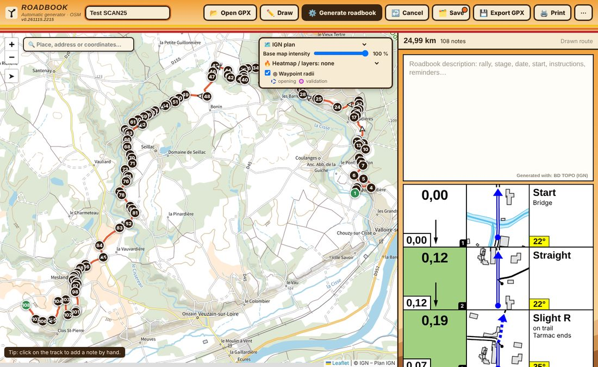
| Button | What it is for | Effect |
|---|---|---|
| 📂 Open GPX | Loads a GPX track, a project (.json), a GPX exported with its project, or a GPX from another source | Shows the track; if the file contains a roadbook and its project, the roadbook is restored (chapter 11) |
| ✏️ Draw | Opens draw mode (chapter 2) | Lets you place points on the map; the route follows the paths |
| ⚙️ Generate roadbook | Starts the generation (chapter 3) | Creates all the automatic notes |
| 📋 Report | Reopens the report of the last generation | Warnings, kept notes, parcels… |
| ↩️ Cancel | Undoes the last change (Ctrl+Z) | Greyed out while there is nothing to undo |
| 🗂️ Save | Saves the current project (.json file) | The orange dot means unsaved changes |
| 💾 Export GPX | Exports in OpenRally GPX format (chapter 11) | Choice of content and included rules |
| Prints or saves as PDF | Strip of 3 boxes of 48 mm, 5 notes per A4 page | |
| ⋯ | Menu of the other functions | Tools, project, settings, help |
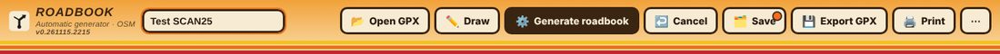
The menu is organised in four collapsible sections (touch a title to open it; only one is open at a time). The app version is shown at the bottom.
| Section | Content | Details |
|---|---|---|
| 🛠 Tools | Stages · Measure a heading / list of turns · Altitude and timing · Markers · Check the notes · Last generation report | chapters 2, 6 and 8 |
| 🗂 Project | Save the project (.json) · New roadbook · Save / Load OSM paths | chapter 11 |
| ⚙️ Settings | Generation settings · My settings · Particular rules · Theme · Language | chapters 4, 10, 11 |
| ❓ Help | Help · User manual | chapter 12 |
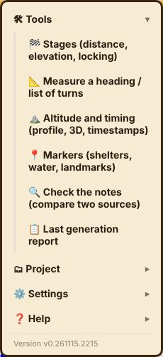
The “Place, address or coordinates” field at the top left of the map accepts a place name, an address or coordinates. In France it uses the IGN geocoder; elsewhere, Photon (OpenStreetMap). A marker appears for a few seconds on the place found.
A right click (or a long press on a touch screen) on the map or on the track opens a bubble: 👁 Google Street View (nearest panorama, in a new tab), 🗺️ Google Maps (opens the place) and 📍 Add a marker here. No note is added.
⋯ › Settings › Theme switches between Dakar day (sand background, default) and Bivouac night (dark background, easier on the eyes in the evening).
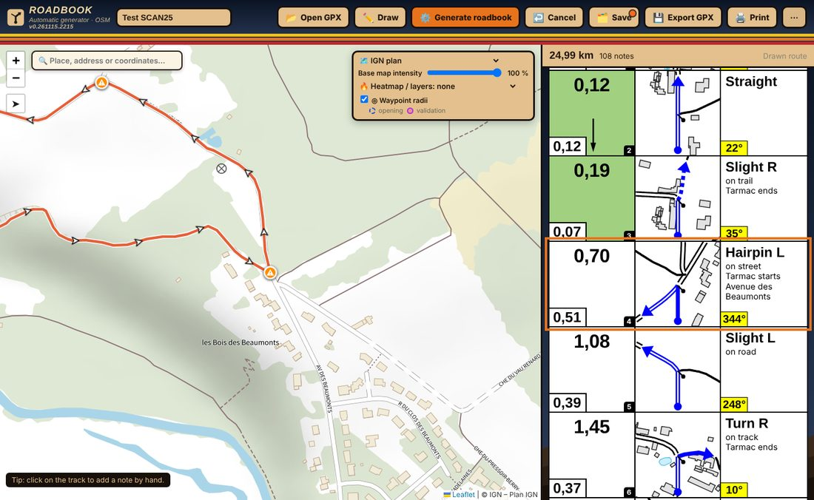
⋯ › Settings › Language switches the app between Français and English, without reloading the page. At first launch the app is in English if the browser is in English, otherwise in French; the choice is then kept in the browser.
The interface (menus, windows, buttons, tooltips) changes language.
The text of the automatic notes follows the same language: “Lég. à D / sur piste” becomes “Slight R / on track”, “Hors piste” becomes “Off piste”, “Début goudron” becomes “Tarmac starts”, “Rond-point, 2e sortie” becomes “Roundabout, 2nd exit”, and so on. The change applies immediately to the existing notes, without regenerating, in both directions. Notes edited by hand never change.
The names of the FIA lexicon symbols are shown with their official English label.
Not translated: proper names (streets, places), the free text you write, and the detailed reason behind “?”. The date field of the Altitude and timing window depends on the browser language.
This manual also exists in French (“Français” link at the top of the page). The 📖 User manual button opens the version that matches the app language.
Everything starts from a track. You can open it from a file, draw it on the map, then touch it up.
📂 Open GPX accepts several kinds of files:
| File | What happens |
|---|---|
| GPX with a track | The track is shown on the map. There are no notes yet: run “Generate roadbook”. |
| “Roadbook + project” GPX (exported by the app) | The complete roadbook is restored: track, notes, edited tulips, waypoints, settings. |
Project .json | Same, from the file saved with 🗂️ Save. |
| GPX without a track (waypoints and images) | Import of a roadbook from another source: see chapter 11. |
OSM paths .rbosm | Reloads paths already downloaded (see chapter 11). |
.json file.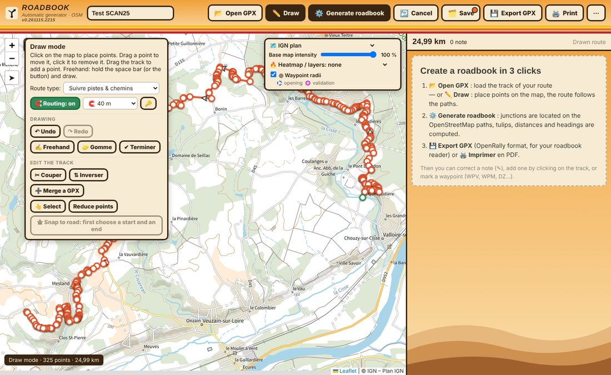
✏️ Draw opens a panel on the map. If a track is already loaded, the app asks whether you want to edit it (the notes are kept and must be regenerated) or erase it to draw a new one (the notes are then deleted). You can move the panel by grabbing its title (“⠿ Drawing mode”) with the mouse or a finger; its position is remembered, and a double-click on the title puts it back in its original place.
🧲 Routing: on / off (R key). On (green), the next points are joined by following the paths; off (white), they are joined by a straight line, to go off piste. Each section keeps the setting it was placed with: changing the button does not modify what is already drawn.
The 🧲 menu next to it sets the magnet distance (5, 10, 20, 30, 40 or 50 m) or turns it off (Magnet off: routing stays active, but points are placed exactly where you click).
How the magnet works. With routing on, a placed or moved point snaps to the nearest road or path. If it is farther than the set distance (40 m by default), it is not placed and a message tells you: bring it closer, or turn routing off. If the path is unknown to the route calculator but is on the map (OpenStreetMap), the route still follows it: it follows the road to the junction, then the path. If the junction is not found, the section stays a straight line (message on screen). Moving a point recomputes the sections that touch it.
| Choice | Effect | When to use it |
|---|---|---|
| Follow tracks & paths | Route (BRouter) that favours tracks and paths | Rally-raid routes, general case |
| Shortest (trails included) | The most direct way | Shortening a section |
| Small roads (cycling) | Route on small roads | Quiet liaisons |
| Roads (car) | Road route | Liaisons on main roads |
| Hiking, MTB, Road bike, Walking (OpenRoute) | OpenRouteService profiles; they need a personal key (🔑 button) | Walking or cycling routes |
| Straight line | Joins the points with a straight line | Off piste, free drawing |
↶ Undo / ↷ Redo (Ctrl+Z / Ctrl+Y): go back over the last points placed.
✍ Freehand: hold the space bar (or the button) and draw freely, like with a pencil.
🧽 Eraser: erases points by hovering over them with the button pressed.
✔ Finish: leaves draw mode.
Tick this box in the panel to generate the notes as you go. After each point you add (and a short 1.5 s pause), the app recalculates the notes for the whole track and updates the roadbook on the right; a small indicator shows progress (“⏳ waiting…”, “✓ 13 notes · 2.1 s”). Notes you edited or added by hand are kept. Without a connection, the indicator shows “⚠ network unavailable” and you can keep drawing. The setting is remembered between sessions.
These tools are in the draw mode panel. A locked stage (see below) cannot be modified.
| Tool | Function | Example |
|---|---|---|
| ✂ Cut | A click on the track deletes the beginning or the end, or changes the start point of a loop | The organiser’s track starts 3 km before the real start: cut it at the right place |
| ⇅ Reverse | Reverses the direction of the route | The file was drawn backwards |
| ➕ Merge a GPX | Adds another GPX file after or before | Join the morning liaison to the afternoon special |
| 👆 Select | Picks a point (1 click) or a section (click the 1st then the last point) | Isolate 800 m of rough track |
| Reduce points | Decreases the number of points of the track | Lighten a 40,000-point track |
| 🛣 Snap to road | Recomputes the selection so that it follows the paths, according to the chosen route type. Greyed out while nothing is selected | Straighten a section drawn freehand |
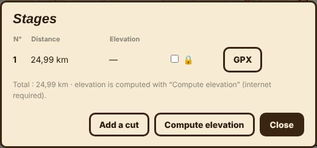
⋯ › Tools › Stages: distance and elevation per stage, padlock 🔒 to lock a stage (no change is possible in it), GPX button to export a single stage, Add a cut to create a new stage and Compute elevation (internet required).
The ⚙️ Generate roadbook button downloads the paths around the track, snaps the track onto them, finds every junction and builds the notes with their tulips.
When you click, a window asks for two data sources, because they do not serve the same purpose:
Tulips: the source that draws the roads, tracks and junctions. In France, the IGN BD TOPO is the most faithful.
Instructions of the 3rd box: the source that provides road names, bridges, numbers and landmarks. Detailed OSM is the most complete.
You can use the same source for both. If they differ, the app loads a second network for the instructions only; if this second network is unavailable, it uses the tulip source and says so. A sentence under the lists announces what the description will say (“Tulips: … · Instructions: …”).
| Source | Characteristics | Choose it when |
|---|---|---|
| BD TOPO (IGN) | Very faithful network, France only. Roads, paths, roundabouts, bridges, fords, road names and numbers, water, buildings | Route in France, carefully drawn tulips |
| OpenFreeMap vector (OSM) | Fast, worldwide, no key. Fewer landmarks | First draft, route outside France |
| Detailed OSM (Overpass) | The most complete (fences, STOP signs, sand, slopes…) but slower, and the free servers are sometimes overloaded | When landmarks matter (rich instructions) |

A progress bar shows the step (downloading the paths, snapping the track, finding the junctions, drawing the tulips) and the elapsed time. Cancel stops the generation.
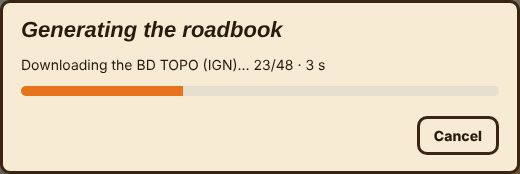
Resuming downloads. Map zones (BD TOPO, OpenStreetMap, vector background) are kept as soon as they are received. If a download fails or you cancel it, the next generation resumes from there without downloading these zones again (“already in memory”).
When it is finished, a Roadbook generated — report window stays open until you click Close:
the number of notes, junctions, tight bends and landmarks;
the notes kept (edited by hand) and the notes recomputed;
the percentage of the route recognised on the paths;
the sources actually used;
a Good to know block with the warnings (source fallback, layers not loaded…) and the “Route poorly recognised” alert if less than 60 % of the track could be snapped.

📋 Copy puts the report in the clipboard, 💾 Save (.txt) saves it as a text file (roadbook name, date, version, result and warnings).

The report also lists the signs and obstacles spotted but discarded, with the reason (for example: placed on another way than yours, after the junction, wrong direction). You can reopen it at any time with the 📋 Report button or ⋯ → Tools → Last generation report.
The black line on the map is the part of the track snapped onto the paths: junctions are found on this line. Orange arrows show the direction of the track.
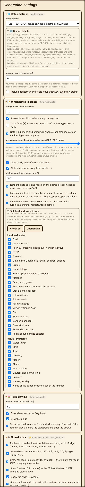
⋯ › Settings › Generation settings opens four collapsible blocks, saved with the project. The ↻ regenerate symbol marks a block whose changes only apply after a new generation; ⚡ immediate marks a block whose changes apply right away. At the bottom: Default values, Cancel, Save.
| Option | Definition | Effect |
|---|---|---|
| Paths source | Fast (OpenFreeMap vector base, default), IGN (BD TOPO, France), Detailed IGN (BD TOPO with landmarks), Detailed (full OpenStreetMap via Overpass) | Starting value of the generation window. The details of the available landmarks are shown in “Source details” |
| Source of the 3rd box instructions | Same source as the paths (default) or another: Fast, IGN, Detailed (OpenStreetMap) | Tulips come from the paths source; street names, bridges and numbers in the 3rd box can come from another source |
| Max gap track ↔ paths (m) | Maximum distance to snap the track onto a path (0 to 100, 0 by default: track kept as it is) | Larger: recovers a freehand-drawn track. 0: no snapping |
| Include pedestrian and cycle ways | footway, cycleway, stairs | Adds these ways to the network, hence more junctions |
| Option | Definition | Effect |
|---|---|---|
| Group the notes closer than (m) | Distance below which two notes are merged (5 to 100 m, 30 by default) | Fewer crowded notes |
| Also note the junctions where you go straight on | A Straight is noted at every junction | Unticked: far fewer notes |
| Note the forks (Y) where one branch is of another type | Y road + path | Adds the forks that change the type of way |
| Note the T and crossroads whose other branches are of another type | T or crossroad road + path | Adds these junctions |
| Grouping of notes on the same road or track (FRO / FPP) | Slider: 0 none, 1 cautious, 2 normal, 3 wide | Higher: fewer notes when you stay on the same road. STOP signs, bridges, level crossings, villages, roundabouts and road number changes always break the series |
| Note the “tarmac ends / starts” changes | Road ↔ track transition | Adds a Tarmac ends / starts note |
| Note the tight bends outside junctions | Bends without a junction | Adds hairpins and tight bends |
| Minimum angle of a tight bend (°) | From 60 to 170 | Smaller: more bends noted |
| Note the off-piste sections | Track outside the paths | Direction, dotted arrow and CAP |
| Landmark notes | Fords, level crossings, stops, gates, bridges, tunnels, sand, slopes, fences, villages, passes, petrol stations | Master switch of the group |
| Visual landmarks | Water towers, masts, churches, wind turbines, summits, localities, track names | Master switch of the group |
| Choose the landmarks one by one | List of checkboxes to untick, with Check all / Uncheck all | Removes a specific type of landmark from the roadbook (some only exist depending on the source) |
| Option | Definition | Effect |
|---|---|---|
| Radius drawn in the tulip (m) | From 25 to 120 m, 50 by default | Larger: wider area around the junction |
| Draw watercourses and water bodies | Sky blue | Adds water to the tulips |
| Draw the buildings | Grey rectangles | Adds buildings to the tulips |
| Show the road you come from and the one you go to | Extension of the black before the starting dot and after the arrow | Unticked: cleaner tulip |
| Option | Definition | Effect |
|---|---|---|
| Also write the HEADING in the tulip | Yellow badge (number + “C”) drawn in the least busy corner of the tulip (on screen and in the GPX) | Ticked (default): the heading stays readable even in a reader that does not show it. Untick if your reader adds it itself (it would appear twice) |
| Automatically add a WPM on notes that follow an off-piste section | A WPM (opening 800 m, validation 90 m) is placed on each note whose preceding stretch is off the paths of the instructions source | Ticked (default): the first off-piste note has none, the next ones do while it lasts. Untick to add nothing; a hand-edited WPM is kept |
| Replace the known landmarks with their lexicon symbol | Bridge, Tunnel, Ford, roundabout, village, mast… | Unticked: the text comes back |
| Show the directions in the 3rd box | Straight, Slight L, Turn R, Hairpin, Keep R… | Unticked: the direction disappears from the screen, the printout and the GPX; nothing else changes |
| Show “on road / on street” (RO) | Type of way | Unticked: RO symbol hidden, FRO grouping stays active |
| Show “on track” (P) | Type of way | Unticked: P symbol hidden, FPP grouping stays active |
| Show “on trail” (T) | Type of way | Unticked: T symbol hidden |
| Show the road names in the instructions | Street or track name, road number (D 976) | Unticked: names and numbers disappear from the automatic notes |
| Show the CAP | On all notes · Only on trails and off piste · Never | Applied immediately to automatic notes (no regeneration) and to notes created afterwards; a note edited by hand keeps its own setting |
Downloaded paths are kept in the browser to go faster. The Clear this memory button (bottom of the window) erases them. ⋯ › Project › Save OSM paths copies them to a folder of your choice (.rbosm file) and Load OSM paths reloads them: the generation no longer needs to download them (see chapter 11).
| I want… | I set |
|---|---|
| A minimal roadbook (changes of direction only) | Untick “junctions where you go straight on”, FRO/FPP at 3, untick “Landmark notes” and “Visual landmarks”, keep the tight bends |
| A very detailed roadbook | Tick straight on, FRO/FPP at 0 or 1, landmarks and visual landmarks on, Detailed OSM for the instructions |
| Fewer notes on tarmac | Increase “Group the notes closer than” and the FRO/FPP level |
| Missing junctions | Increase the max gap track ↔ paths (70 m), tick pedestrian and cycle ways if they are trails |
| More readable tulips | Reduce the drawn radius (35 m), untick buildings and water, untick the road you come from |
| The CAP only off piste | Show the CAP: “Only on trails and off piste” |
| A roadbook in French | ⋯ › Settings › Language: the text of the automatic notes follows |
Each roadbook note fits on one line of three identical square boxes, as in an FIM / FIA roadbook. The roadbook starts with a large description box, then the notes in route order.
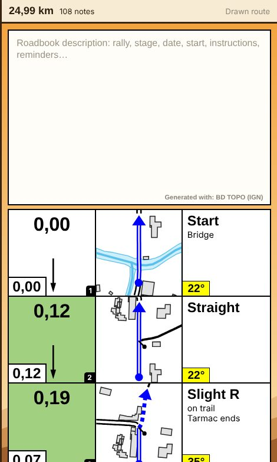
When you hover a note, three buttons appear: ? (why this note), ✎ (edit) and 🗑 (delete).
| Box | Content |
|---|---|
| 1st box (distance) | Mileage at the top (with a comma), distance since the previous note in a frame at the bottom left, waypoint symbol on the right, note number in the black tab. A long arrow appears if the next note is 300 m away or less |
| 2nd box (tulip) | Drawing of the junction: dot = you arrive here, arrow = direction to take |
| 3rd box (instructions) | Direction, lexicon symbols, text, danger (red ! at the top left) and heading (CAP) in a frame at the bottom left: yellow = CAP active (exported and printed), grey = CAP disabled (visible on screen only). A click on the frame enables or disables it, a double click opens the heading measure |
Colours of the 1st box (FIM table): green background when the previous note is 300 m away or less; light blue for a WPM, yellow for a WPC, salmon for a WPS, pink for a WPN, orange for a DZ zone, bright green for a zone end FZ, grey for DN / FN / DT / FT.
Coloured frames: orange from the start to the end of a speed zone (DZ → FZ) or of a neutralisation with a speed limit; red for a WPS or a level-3 danger; pink around the tulip of a CP.
The generation creates: Start and Finish, junctions (Straight, Slight L/R, Turn L/R, Hairpin, Keep L/R for forks), roundabouts (a single note, taken in the middle of the ring, with the exit number; the tulip radius adjusts itself to include the whole roundabout and its entries, unless you set it by hand in the tulip editor), tight bends outside junctions, off-piste sections, tarmac changes, and landmarks (fords, bridges, tunnels, level crossings, villages, churches, water towers, masts…). The text of these notes is written in the app language. Known text lines are replaced by their FIA lexicon symbol (Bridge, Tunnel, Ford, roundabout, Straight → kpS, Keep Right → kpR…) and an ET symbol is inserted between symbols that combine.
In a note’s window (? button), the Why this note? box explains where it comes from: for example “3-way junction: turn left · IGN data”, or “8 junctions grouped: the track stays on the same road D 28”.
A click on a note’s pencil opens its window, with four tabs: Note, Drawing, Waypoint and Zone (the last two: chapter 7). Buttons: Delete (deletes the note), Cancel, Save.
| Field | Definition | Effect |
|---|---|---|
| Note text | First line in large type, following lines smaller | Replaces the automatic text (the note is then marked as edited) |
| Heading CAP (°) | Exit heading, from 0° (north) to 360° | Shown in the yellow frame of the 3rd box |
| 📐 Measure | Measures the heading on the map (chapter 8) | Fills the CAP field |
| Danger | None, ! (level 1), !! (level 2), !!! (level 3) | Red exclamation marks at the top left; level 3 gives a red frame |
| Distance (km) | Position of the note on the route | Editable by hand |
| Text colour | Black or another colour | Changes the colour of the note text |
| Bold | Normal (1st line bold), All bold, No bold | Text style |
| Show the CAP on this note | Checkbox | Enables (yellow) or disables (grey) the CAP of the note; also possible with a click on the CAP in the list |
| Fuel (refuelling) | Checkbox | Adds the fuel pump symbol to the 1st box |

Radius drawn in the tulip (m): larger = the tulip shows a wider area around the junction (from 20 to 150 m, specific to this note).
✏️ Edit the tulip (lines, points): opens the tulip editor (chapter 6).
FIA lexicon symbols: two boxes side by side show the real rendering of the tulip and of the description box. You drag symbols into them; Size (slider or wheel), Rotation, Remove this symbol, Bring to front / Send to back adjust each symbol. ＋ Text adds a free text that can be moved, ＋ Add symbols opens the list (search in French or English, tabs by category: Tracks, On the track, Headings, Safety, Dunes / sand, Symbols, Controls, Abbreviations), 📥 Import my symbol adds a personal image.

Add: a click on the track places a note at that spot, analysed as during the generation (tulip, symbols, nearby landmarks). It carries the “manual” label on screen (not when printed) and survives a new generation. In an area of grouped junctions, the tulip is drawn at the clicked spot, not copied from the neighbouring note.
Move: a click on a note’s number selects it; only the selected note can be moved. Drag it along the track (a bubble shows the gap and the new km), then a window asks you to confirm. Cancel puts the note back. The move is free: the note stays exactly where you drop it, and its content is regenerated for the new spot.
Delete: 🗑 button of the note, or Delete in its window.
The large box at the top of the roadbook holds a free text (rally, stage, date, start, instructions). It is saved automatically, printed at the top of page 1 (it counts for 2 places) and added to the description field of the exported GPX.
The tulip is the drawing in the 2nd box. It shows the junction as the rider sees it on arrival.
Pure blue = your route (thin line, blue arrow).
Black = the other paths, cut where the route passes.
Double line = tarmac road; solid line = track; dotted = trail or small track.
Sky blue = watercourse; grey rectangles = buildings.
The black continues before the starting dot and after the arrow: this is the road you come from and the one you go to (adjustable).
Opened from the Drawing tab of a note, with ✏️ Edit the tulip (lines, points).
| Command | Definition | Effect |
|---|---|---|
| Click on a line | Selects the line | Its points become visible |
| Drag a point | Moves the point | The line follows |
| Click on the selected line | Adds a point at that spot | Lets you adjust a curve |
| Road / Track / Off piste | Type of the selected line | Double line, solid line or dotted |
| ➖ Remove the point | Deletes the selected point | The line straightens |
| ✂️ Simplify | Reduces the number of points of the line | Cleaner line, useful with a finger |
| 🗑 Delete the line | Erases the selected line | The junction is simplified |
| ＋ New line | Draws a missing path | The new line is selected, then adjusted |
| Cancel / Save | Drops or keeps the changes | An edited tulip is kept at regeneration |

The blue line is the route: it moves like the others, but it remains the guiding thread of the tulip.
⋯ › Tools › Check the notes compares, around each note (40 m), the ways known by two data sources. A note is flagged (⚠) when one of the sources shows at least 25 m of way that the other does not show. Nothing is modified by the check itself.
Choose the Data source (the one of the current tulips) and the Base to compare. Possible choices: BD TOPO (IGN), IGN vector plan (BD TOPO), OpenFreeMap (OSM).
Click Run the check: the app downloads the second source if needed and lists the notes to re-check, with the number of metres of way in disagreement.
Touch a line: the window shows the two tulips side by side (A and B), and the map behind stays usable (zoom, pan) so you can judge on the ground.
Click Keep A or Keep B: the chosen tulip replaces the note’s one, which is then marked as edited. The ‹ › arrows go to the next or previous flagged note, ← List goes back to the list.
Clear the ⚠ removes the warning marks without changing the notes.

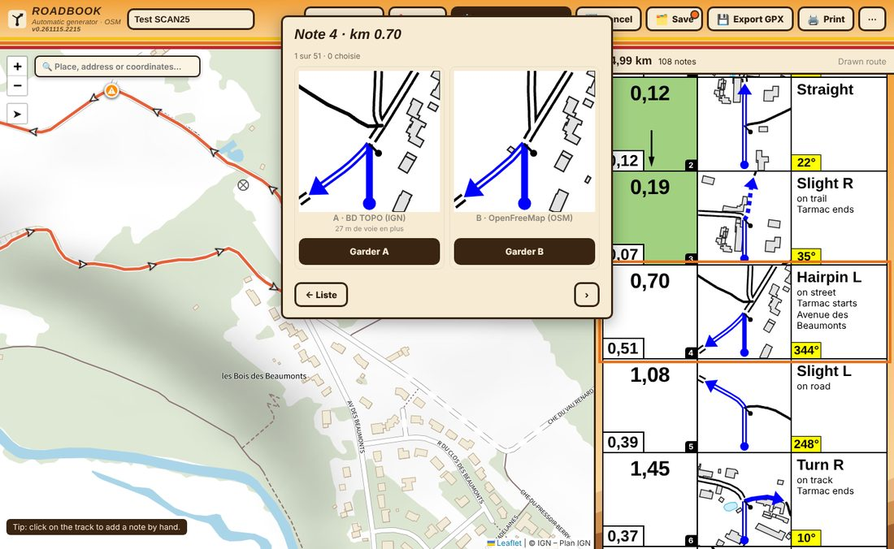
A waypoint turns a note into a regulation checkpoint: the official FIM lexicon symbol appears in the 1st box, circles are drawn on the map and the exported GPX declares it to the reader. One main waypoint per note; it can be combined with a speed zone and fuel.

| Waypoint | Meaning | Default radii (opening / validation) | Typical use |
|---|---|---|---|
| WPV | Visible (always shown) | – / 200 m | A point to reach, known to all |
| WPM | Hidden (only appears on approach) | 800 / 90 m | Checking that the rider follows the track |
| WPS | Safety (always a danger, red frame) | 1000 / 30 m | A dangerous passage to slow down for |
| WPE | Eclipse | 1000 / 90 m | According to the event’s rules |
| WPC | Control | – / 300 m | Control without an arrow: only the order matters |
| WPN | Navigation | 800 / 200 m | A navigation point (high penalty if missed) |
| WPP | Precision | 100 / 20 m | A point to pass with precision |
| CP | Passage control (pink frame around the tulip) | 1000 / 90 m | Control post |
| CH | Time control (liaison) | no default radii | Timed check-in |
| DSS | Special stage start | 1000 / 200 m | Start of the timing |
| ASS | Special stage finish | 800 / 90 m | End of the timing |
| DN / FN | Neutralisation start / end | 1000 / 90 m | Crossing a village, imposed stop |
| DT / FT | Liaison start / end (time limit) | 1000 / 90 m | Liaison with an imposed time |
Name / no.: “auto” by default, or a name of your own (WP 12, CP 3…). This name is written in the GPX for every waypoint type (including DN and CH).
Waypoint description: free text, no limit (instruction, riddle, clue…). The reader shows it in a window to read when stopped, when the waypoint is validated. A “Show a description when this waypoint is validated” box turns the description on waypoint by waypoint (unticked, the text is kept but not exported). Active descriptions are readable in plain form in the GPX.
Opening (m): distance at which the waypoint becomes active. Empty = always visible or never opened, depending on the type.
Validation (m): distance at which it is validated. The values of the FIM table are proposed and can be edited according to the event’s rules.
Time limit (min, optional): for a DSS or a DT. Exports the time control tag in the GPX (timecontrol allowed) so the reader can compute a limit time.
Max speed (km/h, optional): for a DN or a DT with a speed limit (orange symbol).
Neutralisation duration (min): for a DN. Exported in seconds in the GPX.


The circles are shown on the map when the ◎ Waypoint radii checkbox is ticked: dotted blue circle = opening, purple circle = validation. The selected note has thicker lines. The state of the checkbox is remembered in the browser.

DZ — zone start: start of a speed-limited zone. The Max speed (km/h) field gives the number on the orange sign.
FZ — zone end: end of the current zone; the sign is crossed out.
FZ + DZ: end of one zone and start of the next on the same note.
Effect: all the notes between DZ and FZ get an orange frame, the 1st box changes colour (orange for DZ, bright green for FZ), and the GPX carries the dz / fz tags with their speed. Fixed radii of 1000 m / 90 m.
The Danger field of the Note tab adds 1, 2 or 3 red exclamation marks at the top left of the 3rd box. Level 3 (like a WPS) draws a red frame on the line. The reader picks them up from the GPX.
During generation, the app also adds danger notes found on the map (pedestrian crossing, traffic lights, speed bump, rumble strips, etc.) with their symbols, and flags the entry and exit of a village. Each type can be switched off or on again in the settings (“Which notes to create”).
The Fuel (refuelling) checkbox of the Note tab adds the pump symbol to the 1st box and declares it in the GPX. It can be combined with any waypoint.
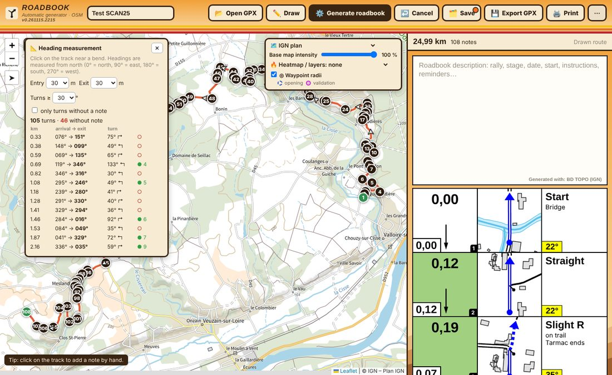
⋯ › Tools › Measure a heading / list of turns opens a measuring panel on the map. Headings are measured from north (0° = north, 90° = east, 180° = south, 270° = west). The panel can be moved: drag its title to put it wherever you want.
Single measure: click on the track near a bend; the panel gives the arrival heading and the exit heading.
In (15, 30, 50 m) and Out (15 to 200 m): length of track used before and after the bend to compute these headings. Short = precise local heading; long = average heading, steadier on an irregular track.
Turns ≥ (20 to 90°): minimum angle for a turn to be listed.
Only turns without a note: limits the list to turns that do not have a note yet.
The list: one line per turn with the km, the headings arrival → exit, the angle and the direction (↱ right, ↰ left), and an indicator ○ (no note) or ● n (note n exists). It lets you place a note with its CAP where one is missing.

⋯ › Tools › Altitude and timing: Compute altitude gives the profile and the 3D view (internet required). Timestamping estimates the times: start time, average speed (with or without taking the slope into account), duration and finish per stage. The Add the times (and altitude) to the exported GPX track checkbox writes them into the track.

⋯ › Tools › Markers places useful landmarks on the map: shelters, water, fuel. Shelters, water, fuel (visible area) searches for them in the displayed area; Add on the map places a marker by hand (like “📍 Add a marker here” of the right click; icons: Shelter, Water, Fuel, Meal, Bivouac, Danger, Photo, Parking, Viewpoint, Landmark). The Add them to the exported GPX checkbox includes them in the file.
Reopens the report of the last generation (also via the 📋 button of the bar): notes kept, warnings, discarded obstacles (chapter 3).
The 🗺️ button of the map opens the choice of base map. These base maps are images used to look at the terrain: the tulips never come from the displayed base map, but from the path source chosen at generation.
| Base map | Use |
|---|---|
| SCAN 25 (IGN maps) | Reference topographic map in France |
| IGN plan | Plan updated every month from the BD TOPO, the closest to the tulips in IGN mode |
| IGN vector plan (BD TOPO) | Vector version of the IGN plan |
| Aerial photos | IGN aerial photographs: see the real state of a path |
| OpenTopoMap | Relief and contour lines, worldwide |
| OSM standard | Classic OpenStreetMap map |
| CyclOSM (tracks) | Highlights tracks and paths |
| OpenFreeMap vector (OSM) | Vector base map, the one of the fast mode |
| Satellite, Esri Topo | Satellite images and Esri topo map, worldwide |
| ➕ Add / manage my base maps | Custom base maps (address with {z}/{x}/{y}) |
Base map intensity: a 0 to 100 % slider fades the base map so the track and the notes stand out (double-click on the percentage: back to 100 %).
“➕ Add / manage my base maps…” (base map list) or “➕ Add / manage my layers…” (Heatmap / layers): choose Base map (it replaces the base) or Overlay layer (it sits on top of the base, with its own intensity slider), then paste the address of an image tile service (with {z}, {x}, {y}), of a vector tile service (.pbf, drawn with a simple style) or of a style file (.json, MapLibre): the app reads the tiles, zoom levels and colours from it.
https://data.geopf.fr/annexes/ressources/vectorTiles/styles/PLAN.IGN/classique.json. Patterns, pictograms and names placed along lines are not drawn.
The Heatmap / layers menu overlays information useful on the ground: traffic, hillshade, slopes, forests and IGN contour lines (usable on any base map). A second slider adjusts their intensity.
| Layer | What it shows | What it is for |
|---|---|---|
| GPS traces (OpenStreetMap) | Where people actually ride | Spotting a busy path that is not on the map |
| OSM generated heatmap | Same idea, computed for your area, keeping only off-road | Seeing the tracks used away from paved roads |
| Marked hiking trails, MTB and cycle routes | The official routes | Finding existing passages |
| LiDAR HD, Hillshade | Relief without the trees; shading (blurry when zoomed in) | Guessing a path under the forest, judging a slope |
| Steep slopes (≥ 30°) | Very steep areas | Avoiding impassable sections (mountains) |
| Public forests (ONF), Forest rescue points (PRSF) | Forest boundaries, rescue points | Access rights, safety |
| Forest accessibility: carrying and skidding | Access possibilities in forests | Assessing practicability |
| Contour lines (IGN) | Altitude as contour lines | Reading the relief on any base map |
Zoom in on your area (zoom 12 or more, 0.25 deg² maximum), choose the speed range (3 to 50 km/h by default) and the minimum distance from paved roads (25 m), then click Load the heatmap here. The 🛣️ Load around my track button does this automatically for the whole loaded track, in small squares over the chosen corridor width (3 km on each side by default), with a one-second pause between squares; a second click stops it. Internet required.
Everything computed is kept in memory (even after closing the app) and is completed with each new load; reloading an already computed area replaces it without duplicates. 💾 Save writes the heatmap to a .json file (on a phone or tablet it opens the “Share” menu), 📂 Import adds it back later; the import completes the heatmap in memory: only the missing points are added, which lets you merge several people’s heatmaps by sending each other the file. 🗑️ Clear empties the memory.
After generating the roadbook and loading the heatmap around the track, this button lists the parts where the track leaves the known paths and draws them on the map: busy (magenta: traces from other users, path probably unmapped), no trace found (dotted green) or area not loaded (grey). A click on a part of the list zooms in on it.
Shows the cadastre parcels. In France, public roads and paths are usually outside parcels (the white gaps between them); a path running inside a parcel is therefore more likely private. Best seen from zoom 15.
See chapter 1: Street View, Google Maps, adding a marker.
Menu ⋯ › ⚙️ Settings › 📏 Particular rules. A profile is a named set of penalties (Navigation, Precise navigation…). The list of profiles is on the left:
📤 Export saves all your profiles to a file; 📥 Import reads them back (on another device, for instance). If profiles in the file have the same name as yours, the generator asks whether to overwrite them or leave them as they are (only the new ones are then added).
FIM: preset, cannot be edited. It tells the reader to apply its full FIM rules.
＋ New creates an empty profile; Duplicate copies the selected profile (the copied FIM gives a starting point: missed CP 15 min, CH and FT at 1 min per minute); Delete removes it.
Profiles are saved with your settings (“My settings”, chapter 11).
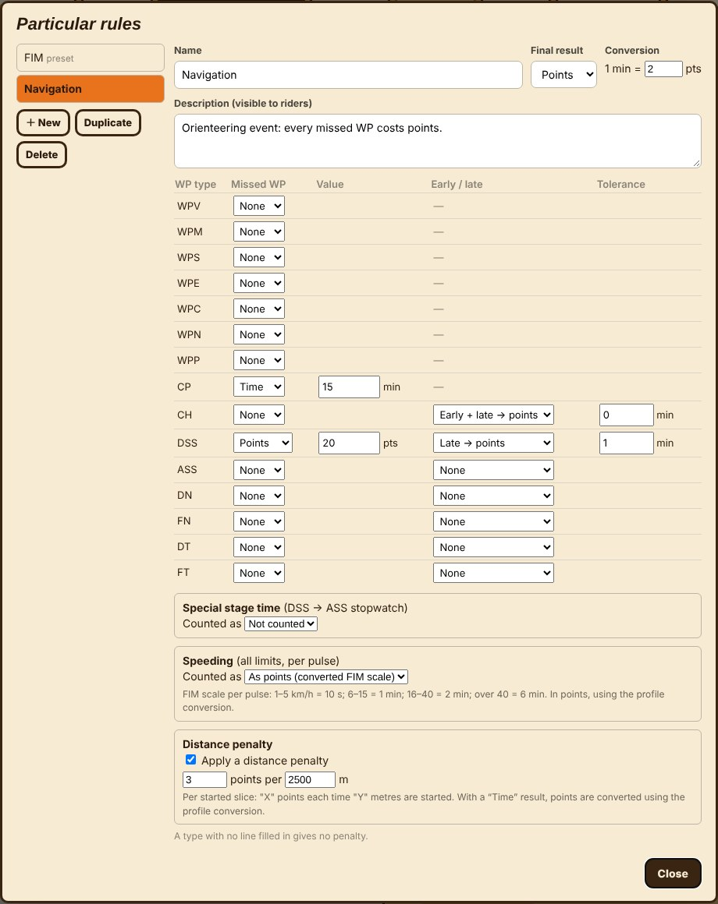
| Setting | Purpose |
|---|---|
| Name, Description | Shown to riders in the reader. |
| Final result | Points or Time: the unit of the total. Each penalty keeps its unit; only the total is converted. |
| Conversion | “1 min = … pts”, used both ways (minutes to points, points to minutes). |
| Missed WP | Per waypoint type: no penalty, time (in minutes) or points. |
| Early / late | Only for types that have a time (CH, DSS, ASS, DT, FT, DN, FN): early and/or late counted as time (1 min per minute) or points (with the conversion), after a tolerance in minutes. Choices: none, early, late or both, in time or points. |
| Special stage time | The DSS → ASS stopwatch: not counted, counted as time, or converted to points (“1 min of special stage = … pt”). |
| Speeding | All limits (zones, special stage, liaison, general limit), per speed pulse. Not counted, as time (FIM scale: 1 to 5 km/h = 10 s, 6 to 15 = 1 min, 16 to 40 = 2 min, over 40 = 6 min) or as points (same scale, 1 min = the number of points you choose; by default the profile conversion). |
| Distance penalty | Tick the box, then “X points per Y metres”, per started slice: X points each time Y metres are started. You choose whether the distance is counted over the whole roadbook or only in special stages (DSS → ASS). |
A type with no filled line gives no penalty. The rules do not change how the reader measures times: they only say how the gaps are valued.
In the 💾 Export GPX window, the Particular rules included list offers your profiles or “None”. Only one profile is included per file. Without rules, the reader keeps its own rules (FIM or free reading). The choice is not saved in the project: check the list before each export.
The rules are written in the rbgen: namespace of the GPX; other readers ignore them and the file remains a valid OpenRally GPX. The GPX stays in charge: its penalties take precedence over the reader’s manual settings.
Automatic save: your work is kept automatically in the browser (track, notes, settings, description). You find your roadbook again when you reopen the app. This copy is tied to this browser and this device; clearing the browser data erases it.
🗂️ Save (or ⋯ › Project › Save the project): creates a .json project file to keep or to pass on. The orange dot on the button means unsaved changes.
Reopen: 📂 Open GPX also accepts the .json file.
🆕 New roadbook (⋯ › Project): starts from scratch (track, notes, description and saved sources are erased).
↩️ Cancel / Ctrl+Z: undoes the latest changes.
⋯ › Settings › My settings: saves to a small file your custom base maps and layers, the displayed base map and layer, the theme, the language, the radii, your particular rules and your OpenRoute key if you have one; “Restore from a file” puts them back (useful when changing browser or device). The current project is not included.
Same window (Chrome or Edge on a computer only): choose a folder and the file reglages-roadbook.json is updated by itself each time a setting changes. In a fresh browser (no settings), the app takes the folder’s settings. After a browser restart it may ask for your OK on the first click. The file contains your OpenRoute key if you have one: do not share it.
Current project in the folder: with this backup, the “Also back up the current project” box (ticked by default) copies your track and notes into the same folder 4 seconds after each change: one project-name.roadbook.json file per project, which you reopen with “Open”. In a browser with no project, the app offers to open the most recent one in the folder. A project with no track is never written, so a real file is never overwritten.
⋯ › Project › Save OSM paths copies the downloaded paths to a .rbosm file (folder of your choice); Load OSM paths reloads them: the generation no longer needs the internet.
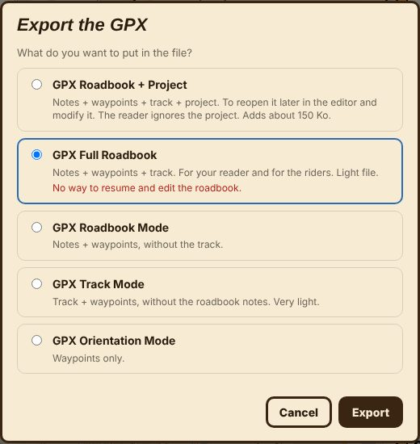
💾 Export GPX opens a choice window, with the Particular rules included list (chapter 10):
| Choice | Content | Use it for |
|---|---|---|
| GPX Roadbook + Project | Notes + waypoints + track + the complete project embedded (about 170 KB more). The reader ignores the project | Keeping an editable version: reopening this GPX in the editor restores the roadbook and lets you modify it |
| GPX Full roadbook | Notes + waypoints + track. Light file | Giving the roadbook to a rider or reading it in your reader. No editable resume |
| GPX Roadbook mode | Notes + waypoints, without the track | A reader that already has the track elsewhere |
| GPX Track mode | Track + waypoints, without the roadbook notes. Very light | Navigating on the track with its checkpoints, zones and fuel, without the tulips |
| GPX Orienteering mode | Waypoints only (the map markers are not included) | Orienteering navigation: only the points to reach matter |
The file is an OpenRally GPX v1.0.3: tulips and notes as images, distance, heading, danger, waypoints with their opening and validation radii, DZ / FZ zones with speed, fuel, DN neutralisation (duration), time limit, roadbook description, particular rules and the snapped track. The Track and Orienteering modes only keep the points that carry a waypoint, a zone or fuel, without tulip or note images: try them in your reader first.
A GPX from any other source (software, website, another roadbook) often has no track: only waypoints, with a tulip image and a 3rd-box image for each note. Open it with Open GPX: the generator offers to import it.
Each waypoint becomes a note, at its position and distance.
Markers (DSS, ASS, WPM, WPV, WPS, CH, DZ/FZ…), headings, dangers and radii are kept.
The images are kept as they are: they replace the drawn boxes and are written back on GPX export.
To go back to the generator’s drawing, open the note (✎) and tick “Replace the imported image… with the generator drawing”.
🖨️ Print opens the browser print dialog, which also lets you save as PDF. The layout follows the roadbook on screen: strip of 3 boxes of 48 mm, 5 notes per A4 page, one header per page (name, page number, total in km). The description takes 2 places at the top of page 1. The “manual” label is never printed; a grey (disabled) CAP is not printed.
When you open the HTML file directly (without a web address), the detailed OSM (Overpass) option is often refused. The generation window then shows a warning with the 🌐 Open the Web App link: save your project (🗂️), open the Web App, then reopen the project.

Web App (GitHub Pages): the app is installed like an application (computer or phone), works with a real web address and updates itself.
Local HTML file: handy, but the browser sends no web address to the servers. Detailed OSM is often refused there; the IGN BD TOPO and OpenFreeMap work normally.
An internet connection is needed for the map, route calculation and path download (except paths already in memory).
When a newer version is online, a banner appears at the bottom of the screen (at startup, then each time you come back to the tab). “Reload” keeps your project and reloads the app; “✕” hides it until you close the tab. Nothing is shown in an HTML file opened locally.
Open GPX: the 120 km track appears.
If it starts too early or ends too late: ✏️ Draw › ✂ Cut at the right places, then ✔ Finish.
Generation settings: FRO/FPP at 2, landmarks on.
Generate roadbook: Tulips = BD TOPO, Instructions = Detailed OSM (Web App).
Read the report; if “Route poorly recognised”, increase the max gap and regenerate.
Check the notes against OpenFreeMap, fix the ⚠ notes (Keep A / B).
Place DSS, ASS, WPM, DZ / FZ, fuel; add the roadbook description.
Export GPX as “Roadbook + Project” (working copy), then as “Full roadbook” for the riders; Print to PDF for paper.
Search for the start place in the search field.
✏️ Draw, “Follow tracks & paths” mode, ⚡ Live roadbook ticked.
Place the points; press R to cross a field in a straight line.
✔ Finish, then Generate roadbook to get the landmarks of the detailed source.
Measure the headings of the off-piste section with Measure a heading.
Place WPNs and WPPs at the points to find, with a name and a description (riddle).
Particular rules › New: result in points, missed WPN 30 pts, missed WPP 10 pts, time not counted, distance 1 pt per 500 m started.
Export GPX › Orienteering mode, “Navigation” rules included.
Riders load the GPX: the reader shows the rules and applies the penalties.
Open GPX on the file without a track, confirm the import.
Add waypoint descriptions and attach a particular rule set.
Export GPX: the original images are written back as they are.
| Problem | Likely cause | Solution |
|---|---|---|
| Junctions are missing | The track moves away from the known paths | Settings › “Max gap track ↔ paths” to 70 m, regenerate |
| “Route poorly recognised” | Less than 60 % of the track snapped | Same; check the source (BD TOPO only in France) |
| Too many notes | Many “straight on” junctions | Untick “junctions where you go straight on”, increase the FRO/FPP grouping |
| Generation refused with detailed OSM | Local HTML file: Overpass servers refuse | Use the Web App, or the BD TOPO / OpenFreeMap |
| “Network unavailable” in live mode | No connection | Keep drawing, generate later |
| The drawn point is not placed | Magnet: no path within the set distance | Bring the point closer, increase the magnet or turn routing off (R) |
| “Snap to road” is greyed out | Nothing selected | Use 👆 Select first |
| An edited note no longer changes at regeneration | Notes edited by hand are protected | Delete it, then regenerate |
| A reopened GPX only gives the track | Exported without the project | Export as “Roadbook + Project”; keep a .json |
| The rules do not appear in the reader | No profile chosen at export | Choose the profile in “Particular rules included” before exporting |
| A new app feature does not show up | Old version in cache | Ctrl+Shift+R; on a phone, close and reopen the app |
| A hand-added base map cannot be deleted | Old version in cache | Same solution |

⋯ › Help › Help reminds you how to read a tulip, the colour of the black line on the map, and troubleshooting tips. 📖 User manual opens this manual in the language of the app.
Data © OpenStreetMap contributors (ODbL), OpenFreeMap © OpenMapTiles, BD TOPO® © IGN (Licence Ouverte), routes BRouter / OSRM, base maps OpenTopoMap, IGN, CyclOSM, Esri.